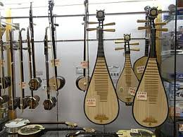
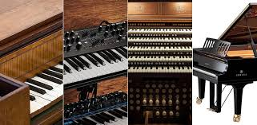
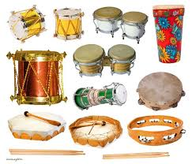
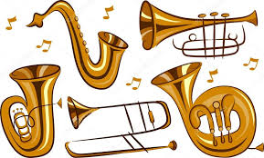
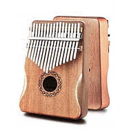
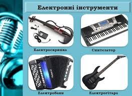

Музичні інструменти: види
Музичний інструмент – інструмент, призначений для виконання музики. Будь-який інструмент, що здатний відтворювати звуки за певних умов і в певних музичних традиціях може бути використаним, як музичний.
Музичних інструментів дуже багато, кожен з яких видає неповторні звуки. Їх історія сягає в далеке минуле. Історики висувають багато різних гіпотез щодо появи музичних інструментів. Після численних археологічних розкопок вчені прийшли до висновку, що найдавнішими музичними інструментами є ударні. Їх суть в вистукуванні ритму. А простий ритм – це перша форма доісторичної музики.
Класифікація музичних інструментів
Всі музичні інструменти діляться на великі групи:
1. Струнні

Це група музичних інструментів, джерелом звуку яких є вібруюча струна, натягнута між двома фіксованими точками. До них належать мандоліна, лютня, контрабас, балалайка, віолончель, арфа, скрипка, гітара, гуслі, кеманча, цимбали, гіджак.
Залежно від способу вилучення звуки струнні діляться на такі групи:
- Смичкові (звук виникає шляхом водіння по струнах інструментів смичком або колесом). Смичковий метод звуковидобування використовується при грі на скрипці, альті, віолончелі і на контрабасі. До цієї груп належать також народні інструменти – басоля, колісна ліра, козобас;
- Ударні (витягується ударом пальців по струнах);
- Щипкові. Щипок використовується на таких інструментах, як арфа, гітара, а також народних – бандура, кобза, торбан, домбра, гуслі, уд, ситар, банджо, укулеле та інших. Щипок може здійснюється пальцем або плектром.
2. Клавішні

Це інструменти, звук у яких видобувається за допомогою важелів – клавіш, розташованих у певному порядку, що складають клавіатуру. До них належать такі інструменти як фортепіано, клавесин, клавікорд, орган, рояль.
3. Ударні

Звук з даних інструментів видобувається за допомогою удару по поверхні. Сюди відносяться: тарілки, бубни, дзвіночки, барабани, кастаньєти. Залежно від висоти звуку вони діляться на:
- Певні (дзвіночок, висота його звуку постійна);
- Невизначені (барабан, висота звуку регулюється на власний розсуд).
У групі клавішних музичних інструментів також виділяють ще і підгрупу металофона – спеціалізованих музичних інструментів, звук яких видобувається ударами по клавішах або молоточком по пластинах. До них належать: ксилофон, віброфон, гонг і вібраслеп.
4. Духові

Це музичні інструменти, що являють собою різні за розмірами та матеріалом трубки, в яких внаслідок коливання стовпа повітря, що міститься в них усередині, утворюється звук. До них відносять: трубу, тубу, флейту, тромбон, кларнет, гобой, валторну, фагот і саксофон. Залежно від матеріалу виготовлення вони поділяються на:
- Мідні духові інструменти. Вони відрізняються більшою гучністю звучання, металевими клапанами, які контролюють подачу повітря і розширення тонального діапазону;
- Дерев’яні духові інструменти.
5. Язичкові

Звук витягується з пластинки, яка з одного кінця прикріплена до інструменту, а з іншого вільна, шляхом коливання. До таких інструментів належать: баян, гармонь, варган, акордеон, гармоніка.
6. Електронні музичні інструменти

Вони доповнені підсилювачами звуку, а також працюють від підключення до мережі або ж від акумулятора. До них відносять електрогітару, емірітон, терменвокс та електрооргани.